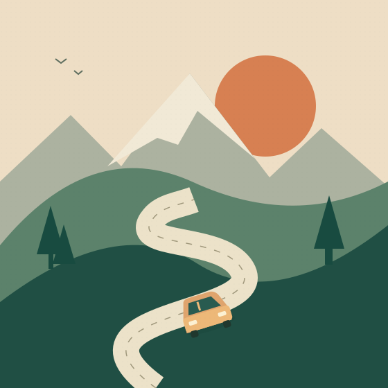

Room for your dreams.
Your goals matter as much as mine. I’d love a partnership where we support each other’s growth.
HELLO, I’M SHUBHAM GUPTA
Designer by day. Photographer when the light’s right.
Looking for good company for the road ahead.
Bengaluru, with a little Delhi in the DNA.

01 / THE SHORT VERSION
I spend my days making things easier to use. Outside work, I’m happiest with a camera, an open road, or a really good meal.
I like simple living, old-school music, and people I can be myself around. Honesty, trust, and loyalty matter to me. So does finding a little joy in the everyday.
02 / THE SCENIC ROUTE SO FAR
From figuring out how things work
to figuring out how they feel.
Bachelor’s in Mechanical Engineering
Amity School of Engineering and Technology
Master’s in Transportation Design
School of Design Studies, UPES
Design and Innovation at ISDI;
Product Development at Aalto University Design Factory
Senior UX Designer
Philips India
03 / AWAY FROM THE DESK
Big views, little moments,
and the occasional leap of faith.
04 / YOUR MOVE
We’ve got a free afternoon.
You’re in charge of the plot.
Choose your afternoon, soundtrack, and route to make a little adventure.
05 / HOME IS ALSO PEOPLE
I live in Bengaluru with my mother and younger brother. Mum is an artist and a former art teacher; my brother is pursuing a career in data science and an MBA.
We believe in simple living and staying close. Family is an important part of the life I hope to build.
06 / ABOUT THE NEXT CHAPTER
I hope to meet someone kind, grounded, and emotionally mature.
Someone to share the everyday with, and cheer on along the way.
Your goals matter as much as mine. I’d love a partnership where we support each other’s growth.
Trust, honesty, and loyalty. Being able to talk openly and treat each other with care.
Close relationships, family, and time for each other. The practical details are a conversation we can have.
THE THINGS THAT MATTER MOST
Suggested wording · still thinking these through.
NO PERFECT OPENING LINE NEEDED
Tell me about a place you love, a song you keep returning to,
or the best thing you ate this week. I’m listening.
A conversation seems like a pretty good place to start.